习题6
Consider the free oscillation response(自由振动响应) data given in Table 9.7.Curve fit these data by assuming that the response is of the form
$$x(t)=\frac{X_0e^{-\zeta w_n t}}{\sqrt{1-\zeta^{2}}} sin(w_n t \sqrt{1-\zeta^{2}} + \phi)$$
where
$$\phi = tan^{-1}\frac{\sqrt{1-\zeta^2}}{\zeta}$$
and determine \(X_0, \zeta, and w_n\)
t = [0.000 0.692 1.538 2.308 3.077 3.846 4.615 5.385 6.154 6.923 7.692 8.461 9.231 ...
10.00 10.77 11.54 12.31 13.07 13.85 14.15 15.85 16.23 17.92 18.46 19.23 20.00 20.77 21.54 22.31...
23.08 23.85 24.61 25.38 26.15 26.92 27.69 28.46 29.23 30.00];
x = [0.801 0.365 -0.386 -0.562 -0.114 0.349 0.338 -0.301 -0.204 0.104 0.228 0.008 -0.010...
-0.0151 -0.00688 0.118 0.0882 -0.028 -0.0871 -0.0551 0.0220 0.0687 0.0376 -0.040 -0.0514 -0.00641...
0.0379 0.0167 -0.0184 -0.0259 -0.0141 0.0149 0.0115 0.00367 -0.0148 -0.0125 0.0157 0.00263 -0.00727];
我们用 lsqcurvefit这个函数来拟合给定的函数，设置未知参数的初始值为[-1,0,1],然而遗憾的是这个函数只能找到给定初始值附近的极值点，并不能找到全局最小值，这也是它的一个局限性，想要完全拟合还是比较困难的，总会有一些误差，我也没有找到别的好的方法
U = lsqcurvefit(@func_9_6, [-1,0,1],t,x)X0 =
0.8217
zeta =
0.1208
wn =
1.6044
x =
Columns 1 through 16
0.8217 0.4026 -0.4222 -0.4847 0.0306 0.3776 0.1980 -0.1649 -0.2430 -0.0196 0.1689 0.1132 -0.0593 -0.1186 -0.0251 0.0734
Columns 17 through 32
0.0613 -0.0178 -0.0564 -0.0486 0.0383 0.0295 -0.0254 -0.0124 0.0122 0.0163 0.0004 -0.0118 -0.0072 0.0046 0.0080 0.0014
Columns 33 through 39
-0.0052 -0.0040 0.0015 0.0039 0.0011 -0.0022 -0.0021
Local minimum possible.
lsqcurvefit stopped because the final change in the sum of squares relative to
its initial value is less than the default value of the function tolerance.
U =
0.8217 0.1208 1.6044将我们计算出来参数的带入到响应函数中，看看实际的值和拟合的值之间的误差，可以看到这个误差总的来说还是比较小的(有没有更小误差的方法呢？)
X0 = U(1)
zeta = U(2)
wn = U(3)
x_ = (X0*exp((-zeta*wn*t))/(sqrt(1-zeta^2)).*sin(wn*t*sqrt(1-zeta^2)+atan(sqrt(1-zeta^2)/zeta)))
plot(t,x_)
hold on
plot(t,x)X0 =
0.8217
zeta =
0.1208
wn =
1.6044
x_ =
Columns 1 through 16
0.8217 0.4026 -0.4222 -0.4847 0.0306 0.3776 0.1980 -0.1649 -0.2430 -0.0196 0.1689 0.1132 -0.0593 -0.1186 -0.0251 0.0734
Columns 17 through 32
0.0613 -0.0178 -0.0564 -0.0486 0.0383 0.0295 -0.0254 -0.0124 0.0122 0.0163 0.0004 -0.0118 -0.0072 0.0046 0.0080 0.0014
Columns 33 through 39
-0.0052 -0.0040 0.0015 0.0039 0.0011 -0.0022 -0.0021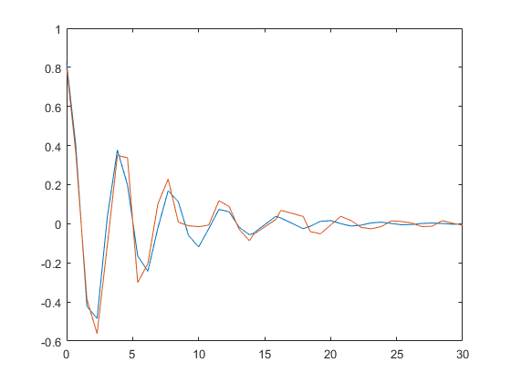
习题10
A single-degree-of-freedom system is shown in Figure 9.33 with a dead zone of width 2b centered on its equilibrium(平衡) position.The government equations of the system are
$$m\ddot{x} + k(x+b) +2c\dot{x}=F(t) \ \ \ \ x<-b \
m\ddot{x}+2c\dot{x}=F(t) \ \ \ \ -b \leq x \leq b \
m\ddot{x}+k(x-b) + 2c\dot{x} = F(t) \ \ \ \ x>b$$
a. Determine the free response of a system with m = 10.0 kg, k = \(150 \times 10^3 \)N/m, and c = 50 Ns/m when the motion is initiated from \(x(0) = 0m\) and \( \frac{dx(0)}{dt} = 2m/s \) in the following cases: (a) dead zone b=1.0um and (b) dead zone b = 1000um.
b. For b = 5.0um and \(x(0) = 0m \) and \( \frac{dx(0)}{dt} = 2m/s \), determine the response of the system when \( F(t) = 20cos(12t)u(t) \ N \), where \(u(t)\) is the unit step function
一开始拿到这个问题我是没什么思路的，虽然知道可以分段求解建立三个分段函数，比如说在[-b,b]上用ode45求解中间那个方程，然后在位移达到b之后再用ode45求解最下面那个方程，然后再回到b再求解中间的方程。。。。如此往复，这样是非常复杂的，人为不好操控的，要是能在ode45中的那个function中直接判断就好了，但是可不可以呢，我在网上查了一下并没有发现相关的资料，于是自己就尝试了一下，在function_9_10_a和function_9_10_b中分别建立了条件判断语句(具体可以看后面的源码)，x(1)就是位移，那么我们根据x(1)来判断就好了，然后跑出来的结果非常令人满意，结论是完全可以在ode45中的函数中建立x(1)（位移）或者x(2)（速度）判断语句来求解微分方程。
a
x0 = 0;
v0 = 2;
m = 10;
c = 50;
k = 150*10^3;b = 1e-6;
[t,xx] = ode45(@func_9_10_a, [0,1],[x0,v0],[],m,c,k,b);
figure(1)
plot(xx(:,1),xx(:,2)) % 位移和速度曲线
figure(2)
plot(t,xx(:,1)) %时间和位移曲线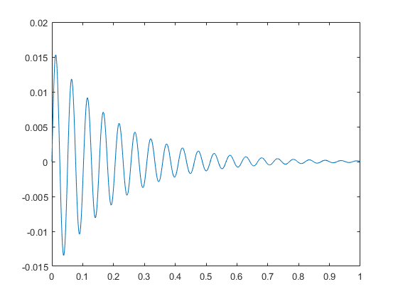
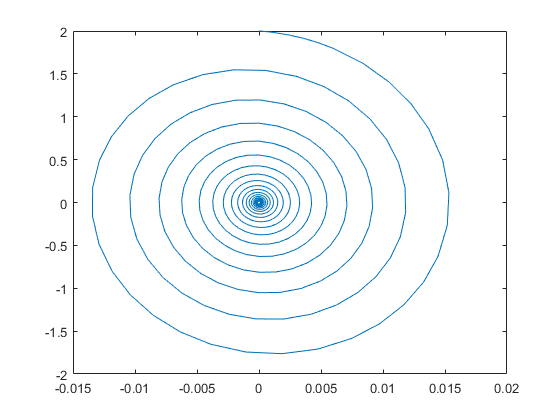
b = 1000 * 1e-6;
[t,xx] = ode45(@func_9_10_a, [0,1],[x0,v0],[],m,c,k,b);
figure(1)
plot(xx(:,1),xx(:,2))
figure(2)
plot(t,xx(:,1))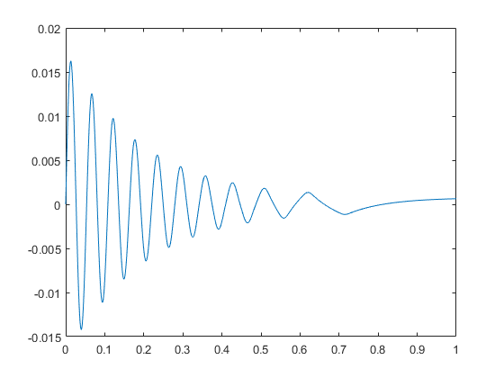
b
b与a不同的地方在于F(t)并非为0，而是一个周期函数，(初始速度也不一样)我们可以发现最后它的时间位移响应曲线最后趋于一个稳定的状态(三角函数)而a中的最后都是趋于一个常值。先来看0-1秒的相应函数曲线，发现很混沌，没什么规律。
b = 5 * 1e-6;
[t,xx] = ode45(@func_9_10_b, [0,1],[0,0],[],m,c,k,b);
figure(1)
plot(xx(:,1),xx(:,2))
figure(2)
plot(t,xx(:,1))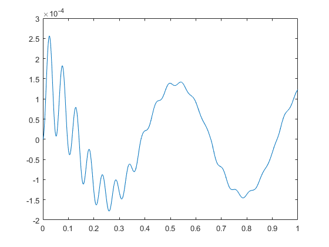
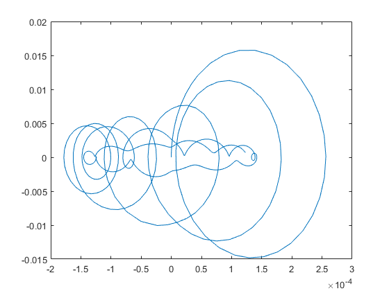
我们可以将时间延长到10秒看看会是什么样的，发现后来就趋于稳定的周期函数了。
[t,xx] = ode45(@func_9_10_b, [0,10],[0,0],[],m,c,k,b);
figure(1)
plot(xx(:,1),xx(:,2))
figure(2)
plot(t,xx(:,1))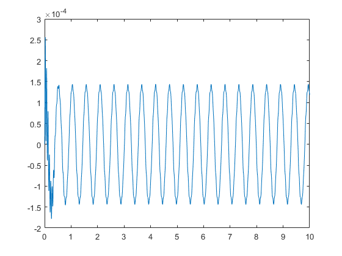
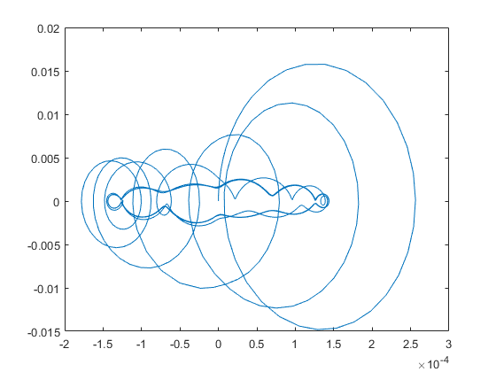
同样的我们也可看看a中延长到10秒的响应状态，可以看到最后是静止了。但是b=1e-6m时是静止在0位移处，b=1e-3m时并非静止在0位移处
b = 1000 * 1e-6;
[t,xx] = ode45(@func_9_10_a, [0,10],[x0,v0],[],m,c,k,b);
figure(1)
plot(xx(:,1),xx(:,2))
figure(2)
plot(t,xx(:,1))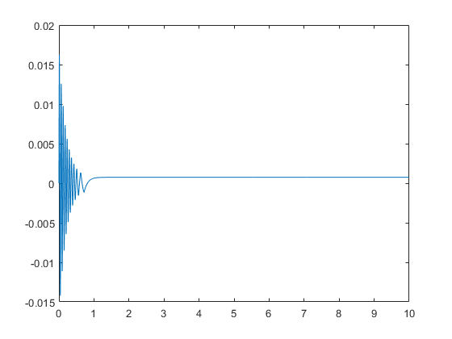
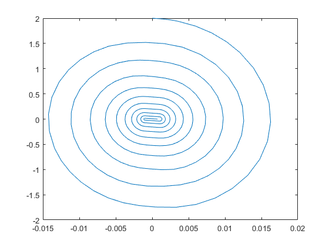
b = 1e-6;
[t,xx] = ode45(@func_9_10_a, [0,10],[x0,v0],[],m,c,k,b);
figure(1)
plot(xx(:,1),xx(:,2))
figure(2)
plot(t,xx(:,1))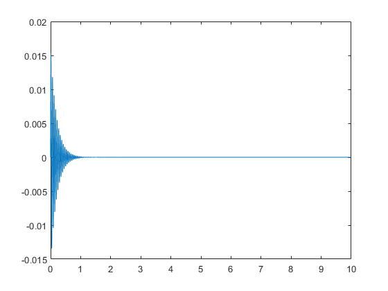
% function_9_10_a
function y = func_9_10_a(t,x,m,c,k,b)
if x(1)>= -b && x(1) <= b
y = [x(2);-2*c/m * x(2)]
end
if x(1)<-b
y = [x(2);-k/m * (x(1)+b) - 2*c/m * x(2)]
end
if x(1)>b
y = [x(2);-k/m * (x(1)-b) - 2*c/m * x(2)]
end
% x = [x(2);-2*c/m * x(2)];
end
% function_9_10_b
function y = func_9_10_b(t,x,m,c,k,b)
if x(1)>= -b && x(1) <= b
y = [x(2);20*cos(12*t)/m-2*c/m * x(2)]
end
if x(1)<-b
y = [x(2);20*cos(12*t)/m-k/m * (x(1)+b) - 2*c/m * x(2)]
end
if x(1)>b
y = [x(2);20*cos(12*t)/m-k/m * (x(1)-b) - 2*c/m * x(2)]
end
% x = [x(2);-2*c/m * x(2)];
end习题14
下面是我没看书之前自己瞎捣鼓的，但有一定参考意义
这道题肯定是无法求出 \( X, \Theta\)，因为没有给定初始条件，但我们可以根据上面的两个等式求出 \( \omega \)
将上面两个等式化简可以得到:
$$(k_1+k_2-\omega^2 m)X + (L_2k_2-L_1k_1)\Theta = 0 \
(k_1L_1^2+k_2L_2^2-\omega^2I_c)\Theta + (L_2k_2-L_1k_1)X = 0$$
我们可以通过:
$$(k_1+k_2-\omega^2 m)(k_1L_1^2+k_2L_2^2-\omega^2I_c)-(L_2k_2-L_1k_1)^2=0$$
求出 \( \omega \)
我们可以先尝试一下用fsolve直接把上面两个等式代入看看能求出来啥
k1 = 14600;
k2 = 21900;
L1 = 1.52;
L2 = 1.22;
m = 730;
Ic = 1360;我们可以先画个图看一下具体有几个零点
f1 = @(w,t)((k1+k2-w.^2*m).*(k1*L1^2+k2*L2^2-w.^2*Ic)-(L2*k2-L1*k1)^2)
w_ = linspace(-10,10,500);
plot(w_, f1(w_,[]))f1 =
function_handle with value:
@(w,t)((k1+k2-w.^2*m).*(k1*L1^2+k2*L2^2-w.^2*Ic)-(L2*k2-L1*k1)^2)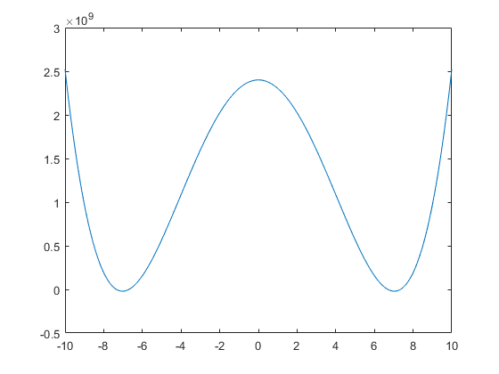
从图中我们可以看出有两个或四个零点，由于看的不太清楚我们可以再细分一下区间重新画图
w_ = linspace(6,8,500);
plot(w_, f1(w_,[]))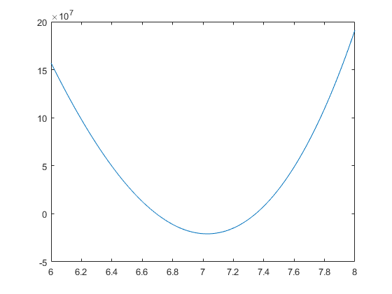
从上图可以很明显的看出在[6,8]区间上有两个零点，因为它是个偶函数，所以共有四个零点，我们可以用第五章FindZeros函数求解
w_ = linspace(-10,10,500);
w = FindZeros(f1,4,w_,[])w =
-7.3464
-6.6934
6.6934
7.3464下面的解法比较专业
K = [k1+k2 L2*k2-L1*k1;L2*k2-L1*k1 k1*L1^2+k2*L2^2];
M = [m 0;0 Ic];
[mode E] = eig(K,M)
[w indx] = sort(diag(sqrt(E)))mode =
0.0244 -0.0279
-0.0204 -0.0178
E =
44.8014 0
0 53.9690
w =
6.6934
7.3464
indx =
1
2上面的结果中，w就是 nature frequencies。mode就是mode shapes
习题18
m = 10;
Jp = 2;
Jt = 1.2;
k1 = 2.5 * 10^6;
k2 = 2.5 * 10^6;
M = [m 0 0 0;0 Jt 0 0;0 0 m 0;0 0 0 Jt];
K = [k1 0 0 0;0 k2 0 0;0 0 k1 0;0 0 0 k2];
omega = linspace(0,1500,10); %参照答案的图示，我也将其分为10个值
Mzero = zeros(4,4); %注意这里需要补充一个Mzero，如果直接放0在Mx中会报错
Mx = [K Mzero;Mzero M];下面先用for循环跑一下在每个\( \omega \)下的 \( \Omega \)是什么样的
for i=omega
G = [0 0 0 0;0 0 0 -Jp*i;0 0 0 0;0 Jp*i 0 0];
Kx = [K*inv(M)*K K*inv(M)*G;G'*inv(M)*K K+G'*inv(M)*G];
[mode E] = eig(Kx,Mx);
[Omega indx] = sort(diag(sqrt(E)));
Omega
endOmega =
1.0e+03 *
0.5000
0.5000
0.5000
0.5000
1.4434
1.4434
1.4434
1.4434
Omega =
1.0e+03 *
0.5000
0.5000
0.5000
0.5000
1.3112
1.3112
1.5889
1.5889
Omega =
1.0e+03 *
0.5000
0.5000
0.5000
0.5000
1.1921
1.1921
1.7476
1.7476
Omega =
1.0e+03 *
0.5000
0.5000
0.5000
0.5000
1.0856
1.0856
1.9190
1.9190
Omega =
1.0e+03 *
0.5000
0.5000
0.5000
0.5000
0.9910
0.9910
2.1022
2.1022
Omega =
1.0e+03 *
0.5000
0.5000
0.5000
0.5000
0.9073
0.9073
2.2962
2.2962
Omega =
1.0e+03 *
0.5000
0.5000
0.5000
0.5000
0.8333
0.8333
2.5000
2.5000
Omega =
1.0e+03 *
0.5000
0.5000
0.5000
0.5000
0.7681
0.7681
2.7125
2.7125
Omega =
1.0e+03 *
0.5000
0.5000
0.5000
0.5000
0.7104
0.7104
2.9326
2.9326
Omega =
1.0e+03 *
0.5000
0.5000
0.5000
0.5000
0.6594
0.6594
3.1594
3.1594我们可以发现对于每个给定的 \(\omega, \Omega \) 一共有8个值，前四个是相同的，5-6也是相同的，7-8也是相同的。也就是说\(\Omega \) 一共有三个不同的值 ，下面我们把这些 \(\Omega \)求出来
Omega1 = [];
Omega2 = [];
Omega3 = [];
for i=omega
G = [0 0 0 0;0 0 0 -Jp*i;0 0 0 0;0 Jp*i 0 0];
Kx = [K*inv(M)*K K*inv(M)*G;G'*inv(M)*K K+G'*inv(M)*G];
[mode E] = eig(Kx,Mx);
[Omega indx] = sort(diag(sqrt(E)));
Omega1 = [Omega1 Omega(1)];
Omega2 = [Omega2 Omega(5)];
Omega3 = [Omega3 Omega(7)];
end画图
plot(omega,Omega1,'ks-')
hold on
plot(omega,Omega2,'ks-')
plot(omega,Omega3,'ks-')
xlabel('\omega')
ylabel('\Omega')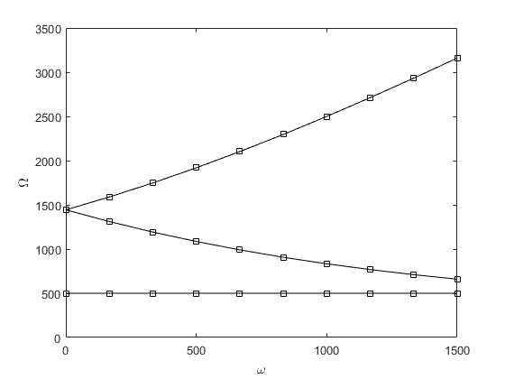